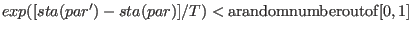

Next: Setting up parameter files Up: McPhase USERS MANUAL Previous: Program felog - display Contents Index
In order to fit experimental data a very general concept of fitting program has been developed. Perl has to be installed on the system in order to run this fitting program.
The program searchspace is used to cover the parameter space and test different regions of this space for local minima of a specific function sta(par1, par2 par3 ...) of these parameters.. It may be used to find good starting values for the program simannfit.
The program simannfit uses a simulated annealing algorithm described
in [3].
This algorithm does a random walk through the parameter space
with the aim to fit the parameters to a minimum of the function sta.
Starting at a set of parameter values (par1, par2, par3) the algorithm
changes these values by a randomly chosen step width (the maximum step width
is specified at the beginning) to (par1', par2', par3').
The function sta(par1', par2', par3', ...) is calculated at
for these new parameter values. The step is accepted if
.
Otherwise it is rejected. The statistical temperature  involved in this
condition is lowered from step to step as well as the maximum step width allowed.
involved in this
condition is lowered from step to step as well as the maximum step width allowed.
In the following we describe how to set up the program packages of McPhase to
solve a specific fitting problem.
As an example we refer to the fitting of the magnetic
excitations of CeCu in mcphas/examples/cecu2a/fit.
in mcphas/examples/cecu2a/fit.